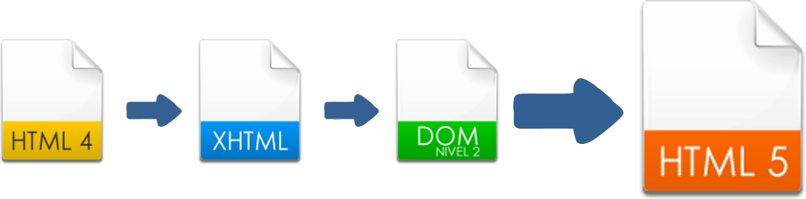
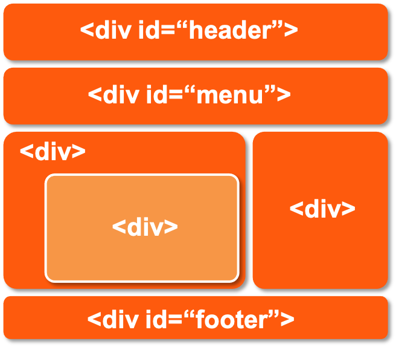
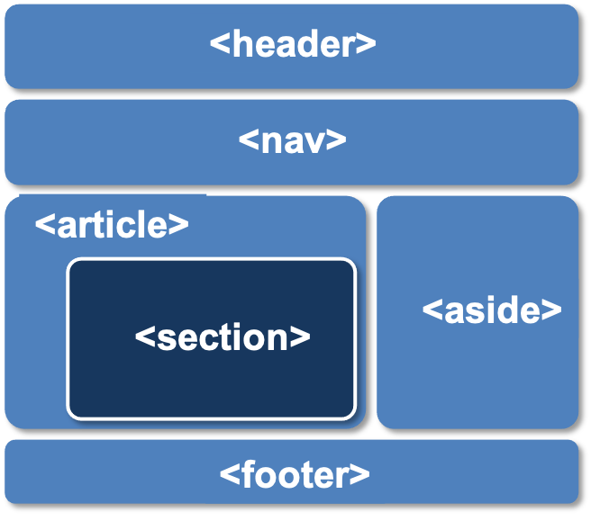

Implementaciones actuales.
La vamos a trabajar en su mayor parte.
El Web Hypertext Application Technology Working Group es una comunidad de personas y empresas interesadas en la evolución de HTML y las tecnologías conexas.
Fundado por integrantes de Apple, la Fundación Mozilla y Opera Software
Para consultas específicas.